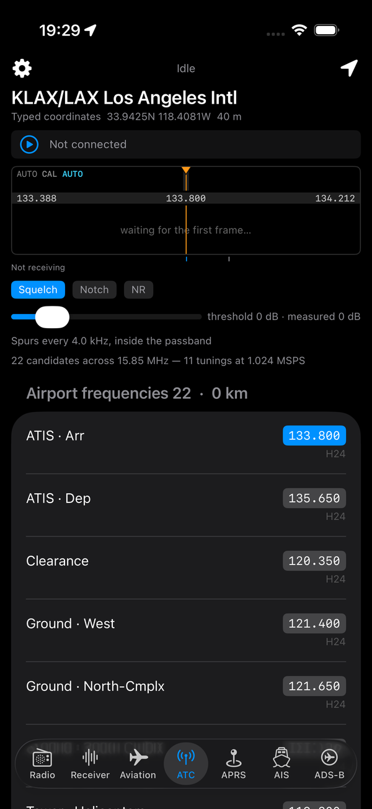
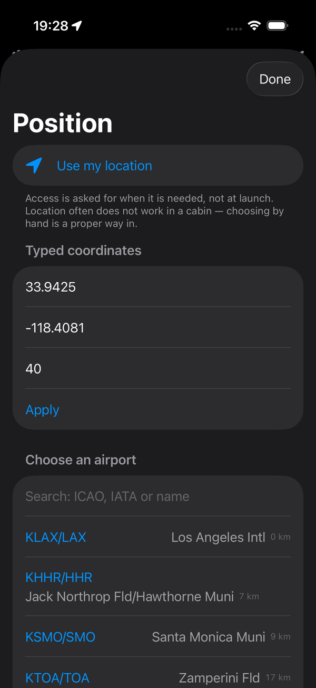
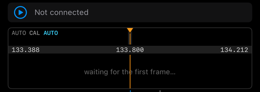
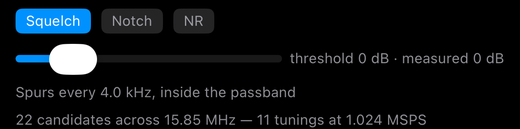
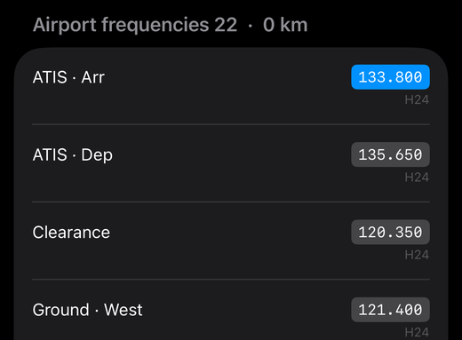
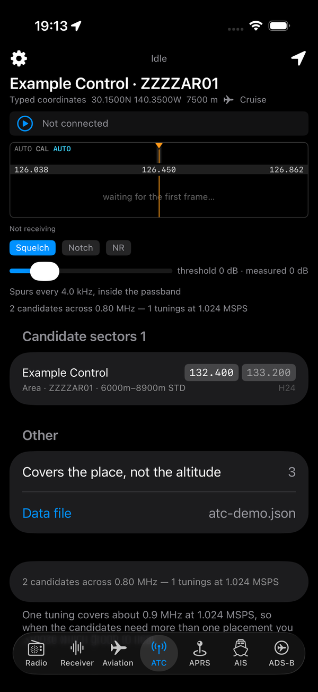

ATC
The page for listening to air traffic control. Rather than leave you to remember frequencies, it takes the airport you are at and lists its ATIS, clearance, ground, tower and approach frequencies, each a tap away.

This page needs airspace data. The frequencies come from a data file you import; the app has none of its own. If you have not imported one, see Airspace data file, which offers a Los Angeles example. The pictures here use it.
Three steps
- Import a data fileThe first time, the page says No airspace data. Tap Choose a file and pick your JSON. Once is enough.
- Say where you areTap the location arrow at the top right and choose one of the ways on the Position sheet:

- Use my location: the phone's own fix.
- Typed coordinates: latitude, longitude and altitude in metres. West and south are negative.
- Choose an airport: pick one from the list, nearest first, or search by code or name. Location often does not work in a cabin, and this is the least trouble.
- Tap a frequencyBack on the page is that airport's list. Tap a frequency on the right to listen. Start with ATIS: a recording on a loop, always on the air, and the best proof that everything works.
One flight, and every frequency along it
From the gate to the cruise an aircraft talks to a string of positions in turn. You used to have to look each one up; here, once an airport is chosen, they are all in one list, and tapping down it in this order follows a flight the whole way:
| # | Position | What is said | At Los Angeles |
|---|---|---|---|
| 1 | ATIS | A recording on a loop: weather, runways in use, pressure. Pilots hear it before starting. | 133.800 (arrivals) 135.650 (departures) |
| 2 | Clearance | The route clearance: which departure, the first altitude, the transponder code. | 120.350 |
| 3 | Ramp | Pushback and engine start near the gates, split by terminal. | 129.325 – 131.450 |
| 4 | Ground | The taxi route: which taxiways, and where to hold short. | 121.650 (north) 121.750 (south) |
| 5 | Tower | Take-off and landing clearances. The easiest to hear and the most vivid. | 133.900 (north) 120.950 (south) |
| 6 | Approach / departure | The tens of kilometres round the airport: climbs and turns for departures, and arrivals put in line for the final. | 124.300, 124.500, 124.900 … |
| 7 | Center | En-route control in the cruise, one sector covering hundreds of kilometres. | Needs a file with sectors; see below |
An arrival runs the other way: center, approach, tower, ground, ramp. It is better still beside the ADS-B page: see an aircraft on final on the radar, switch to the tower, and hear it cleared to land.
What is on the page
The heading is the airport recognised (or the sector that covers your position). The line beneath gives where the position came from, the coordinates and the altitude. An old position says locate again; with no altitude it says altitude unknown and every frequency is listed.

Play and stop on the left, with the frequency being heard. The small waterfall shows about 1 MHz round it: air traffic speech comes and goes, and a short bright streak is somebody talking. The Watching … inside · outside line says how many of the listed frequencies this one tuning can see at once.

Squelch silences the gaps; the slider sets its threshold, shown with the measured level. Notch removes the steady tones the receiver makes itself. NR lowers the hiss and leaves the voice a little hollow. The line below says how many tunings it would take to hear every frequency in the list.

One row per position: its name on the left and its frequency on the right, with a standby frequency beside it where there is one. Blue is the one being heard. A green lamp beside a frequency means somebody is talking there now: tap it and you hear them. Rows dimmed and marked not at this altitude are not in use at your height, such as ground and tower from the cruise.
The lamps: which frequency is active
The receiver sees about 1 MHz at a time, and every listed frequency inside that is watched together, with no need to try them one by one:
| State | Meaning |
|---|---|
| listening (blue) | The frequency you are hearing. |
| signal (green) | There is a signal there now. |
| quiet (grey) | Watched, and nobody is talking. |
| not watched | Outside what is being watched; unknown. Tap it and the receiver tunes there. |
No lamp does not mean no traffic. A controller may speak a few times a minute; watch a while before deciding.
With sector data: by position and altitude

If your data file has sectors, the page also answers "who has me now":
- The heading becomes the sector covering your position and altitude, an en-route or approach sector.
- Candidate sectors lists every one that fits, with its frequency, standby frequency and vertical extent.
- Covers the place, not the altitude counts sectors over your position at another height. They come into play as you climb or descend.
- Useful as a passenger: en-route control in the cruise, then approach and tower on the way down.
The Los Angeles example has no sectors, so it lists by airport only, which is all most listening needs.
Common situations
| What you see | Why, and what to do |
|---|---|
| No airspace data | No data file has been imported; see Airspace data file. |
| Outside published airspace, and no frequencies | Your position is more than 30 km from every airport in the data and inside no sector. Tap the arrow at the top right and choose an airport. |
| A frequency plays nothing | Traffic is intermittent: wait, or tap ATIS first to prove reception. And check the receiver's frequency calibration: an air band channel is narrow, and a little off is nothing at all. |
| Tower and approach are heard, ground is not | Ground uses a low antenna and little power, and is rarely heard more than a few kilometres from the field. |
| The controller is heard and the pilots are not, or the reverse | Normal. The ground station and the aircraft are in different places and your antenna may not reach both; aircraft, being high, are often the easier. |
| A whistle under the speech | Turn on Notch. |